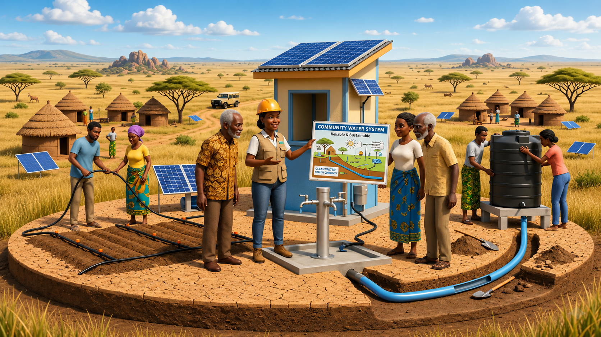
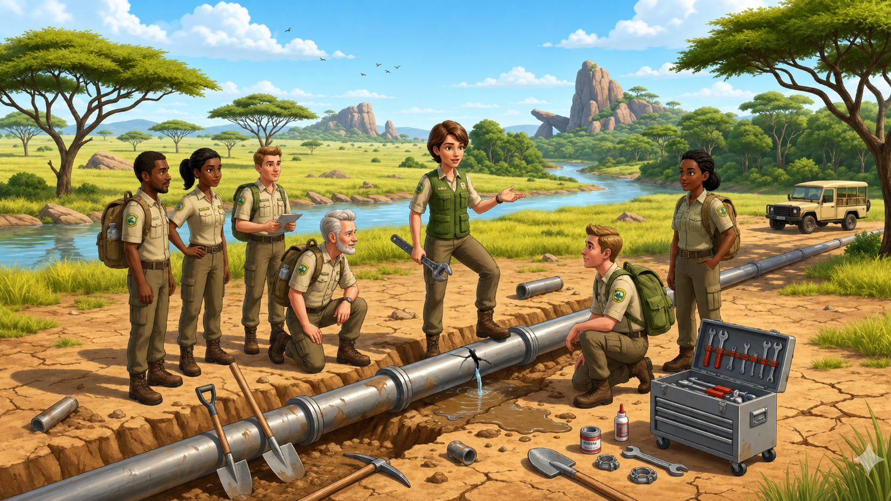
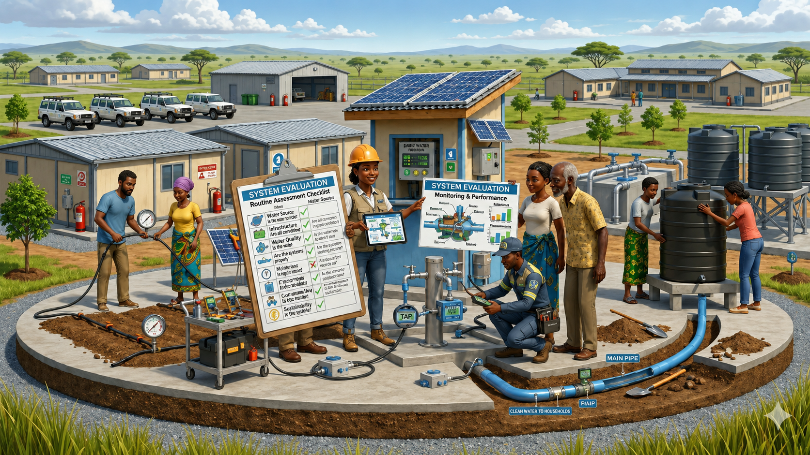
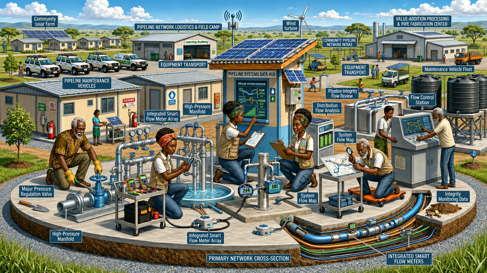

Implementation Plan
This section provides the reader with an understanding of how to implement this project. It should be clear how the community are involved in implementation.
- How will the solution be constructed and how will the community be trained in its construction and use?
- How will the solution be introduced to the client or community and used, constructed, managed, and maintained over time?
- How will the design be evaluated?
- How will the project affect the future workings of the client or community?
- How can the client or community take ownership of the project?
- How will the solution be repaired if something goes wrong?

System Implementation
The hybrid leak detection system will be implemented by building on the existing water infrastructure already used in Lama Lama Country, such as FarmBot monitoring systems and satellite connectivity (Centre for Appropriate Technology, n.d.). Additional sensors, including pressure, flow, and tank level monitors, will be installed at key locations such as the main pipeline, water tanks, and remote sites.
The system will be introduced in stages, prioritising critical infrastructure first. This staged approach improves reliability and allows gradual expansion over time, which is recommended for remote water systems (Romero-Ben et al., 2023).
Community Training and Involvement
Community involvement is essential for long-term success. Local Rangers and community members will be trained to interpret alerts, inspect infrastructure, and carry out basic repairs. This aligns with best practices for remote infrastructure projects, where local capacity building improves sustainability and system performance (Centre for Appropriate Technology, n.d.).

Operation and Maintenance
The system will operate through continuous monitoring of pressure, flow, and water levels to detect leaks early. When abnormal conditions are detected, alerts will guide Rangers to the affected location. Early detection systems have been shown to significantly reduce water loss and improve response times in water distribution networks (Romero-Ben et al., 2023).
Routine maintenance will include inspections, sensor checks, and minor repairs. More complex issues will be escalated to external technicians when required.
System Evaluation
The system will be evaluated based on:
- Reduction in water loss
- Response time to leaks
- Reliability during seasonal conditions
These performance indicators are commonly used in water management systems to assess efficiency and sustainability (Romero-Ben et al., 2023).

Long-Term Sustainability and Ownership
The system is designed to support community ownership by using simple and modular components that can be maintained locally. This approach reduces dependence on external support and ensures long-term functionality in remote areas (Centre for Appropriate Technology, n.d.).
Improving water efficiency is especially important in remote Australian communities, where water scarcity directly impacts daily life and wellbeing (Beal, 2018).
